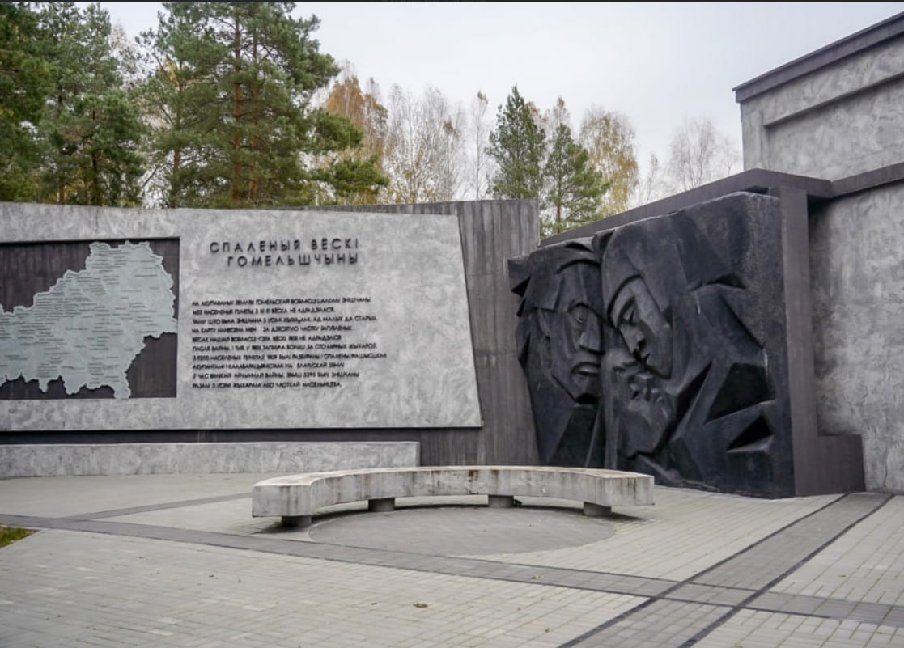

Мемориальная доска жертвам фашизма (ист.). Ул. Советская, 39, на здании производственного обувного объединения «Труд».
В Великую Отечественную войну во временно оккупированном Гомеле в казармах бывшего кавалерийского полка немецко-фашистские захватчики
создали центральный пересыльный концентрационный лагерь, в котором одновременно находилось около 30 тыс. человек. советских военнопленных.
От непосилой работы, голода, холода здесь умирала за сутки 300-500, зимой около 1 тыс. узников. Всего за время существования лагеря
гитлеровцы погубили в нем болыш за 100 тыс. человек. человек.
В 1970 г. на чествование памяти жертв фашистского террора установлена мемориальная доска.